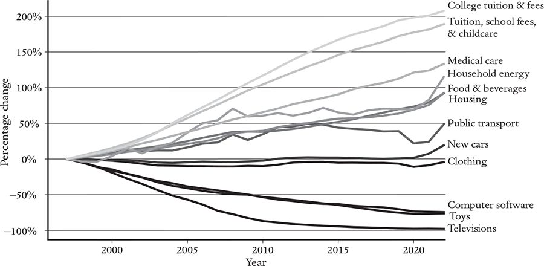
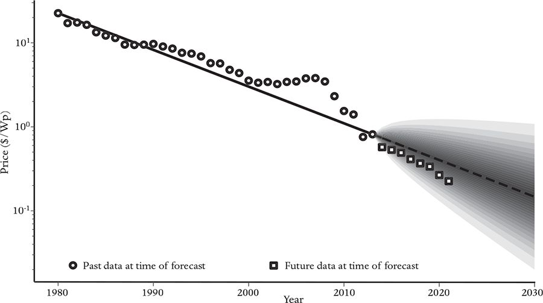
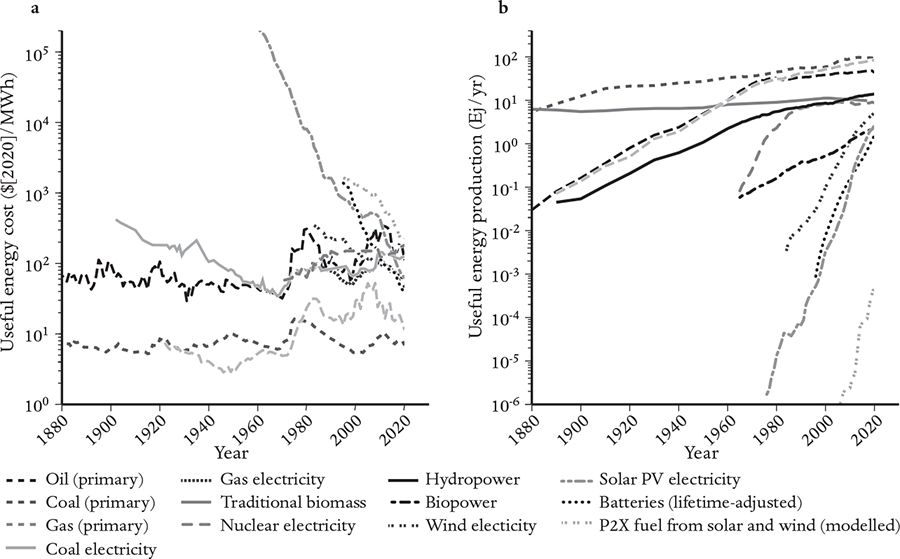
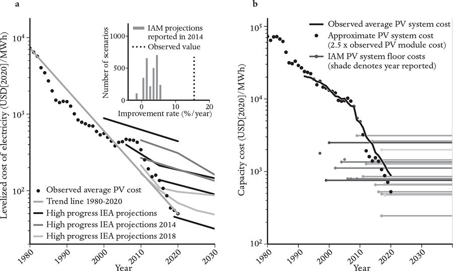

Sensible policies on climate change should weigh the costs of slowing climate change against the benefits of slower climate change.
Predictions about the anticipated impacts of climate change aren’t perfect: We can’t say precisely how much warming will happen for a given level of carbon in the atmosphere, and we don’t know exactly how high and how quickly sea levels will rise, or when the carbon locked in the tundra will warm enough to begin emitting vast quantities of methane. However, there is a remarkable scientific consensus that these effects present a grave danger. The economics of climate change, meanwhile, remains highly controversial – both as to how much the green-energy transition will cost and the right way to make it happen. Some say that it will be very expensive, while our recent work (discussed below) says it will save us money. Some say we need a crash program to build more nuclear reactors; others (like me) say this would be a waste of money that could be spent more usefully elsewhere. Some say we need a carbon tax or a cap-and-trade system; others say we should simply criminalize carbon emission. Some say that, with the right incentives, the market will take care of everything; others say the government should play a leading role – for example, by investing in new technologies. Some say that we must abandon the idea of economic growth; others (like me) say that we can stop emitting greenhouse gases while continuing to grow if we invest in the right technologies. Far too many people say there is nothing we can do. To make the green-energy transition rapidly and cheaply, we need reliable models, based on empirical data, that allow us to predict the likely outcomes of each possible course of action.
To reduce and ultimately eliminate greenhouse-gas emissions produced by the burning of fossil fuels and bad agricultural practices, we need to dramatically change the technological underpinnings of much of the global economy. What is the best way to do this? How much will it cost?
I realized that I could contribute to solving this problem when the Director of the US Department of Energy’s National Renewable Energy Laboratory, Dan Arvizu, came to the Santa Fe Institute in 2008 with a few of his scientists and asked us to help them ‘think out of the box’. The core of the planning problem was to understand which green technologies were most likely to be able to replace fossil fuels soonest and at the most affordable price.
Our conversations led to a workshop at SFI attended by leading technologists and economists studying the climate transition. The room was full of disagreement. Many advocated for wind and solar energy, together with various forms of energy storage. Others were fans of nuclear power; still others advocated carbon capture and storage – that is, removing the carbon dioxide when fossil fuels are burned, before it enters the atmosphere. Who was right? It was not enough to know what different methods of generating energy currently cost; we needed to know what the costs would be twenty to fifty years in the future. The economics of climate change hinges on anticipating how the costs of the various technological solutions are likely to change over time.
William Nordhaus, an economist from Yale, was present at the workshop. In a paper published in 1991, he was the first person to address the economics of climate change.2 In February 1992, he unveiled the Nordhaus model, DICE, which stands for Dynamic Integrated Climate Economy. It is based on a traditional, aggregate macroeconomic model, similar to the Solow model discussed in Chapter 5, using a single representative household that works for a single representative firm that produces a single good. Nordhaus assumes this represents the entire world. His DICE model extends the Solow model by adding an abatement function and a damage function. The abatement function specifies the cost of reducing emissions to a given level. You can think of abatement as an investment – by spending a given amount of money every year, we reduce emissions by a certain amount. The damage function gives the future economic cost of global warming as a function of total emissions. The reduction in the cost of the damages is like the return on the investment. Nordhaus performs a cost-benefit analysis: The right level of investment to combat climate change is computed by maximizing the utility of the representative agent, which is effectively the best compromise between the cost of abatement and the benefit of avoiding future damage.
While the Nordhaus model recommended that we should take action to mitigate climate change, it suggested that we should do so at a measured pace. In a recent paper, Nordhaus wrote that the optimal, ‘welfare maximizing’ course of action would eliminate emissions so slowly that it would result in about 3.4°C (6.1°F) of warming above pre-industrial levels.3 That’s a lot of warming! Though the resulting sea-level rise would occur slowly, it would eventually submerge most large cities. Nordhaus subsequently received the Nobel Prize in 2018 for this work.
I strongly disagree with Nordhaus’s conclusions. Many prominent mainstream economists, such as Nicholas Stern, Joseph Stiglitz and Jeffrey Sachs, also disagree.4 They argue that Nordhaus’s abatement function is much too costly, his damage function is much too low, and his discount rate is too high (meaning he doesn’t give enough weight to the future in relation to the present). I agree with these critiques, but I go a step further: Addressing energy-related emissions to combat climate change will very likely save us a lot of money. The technological forecasts from my research group at Oxford indicate that the green-energy transition will ultimately make energy prices substantially lower than they have ever been. From a purely economic perspective, even if climate change were not a looming threat, we should still make the energy transition quickly (doing most of it within twenty years). In addition to the huge benefits a fast transition will reap for the climate, if we discount all the costs to the present, it will probably save us tens of trillions of dollars. Here’s how my collaborators and I arrived at that conclusion.
For the economy to make the climate transition as quickly and cheaply as possible, we need to know which technologies are most likely to succeed in replacing fossil fuels quickly at the lowest cost. Given that technological progress depends on innovation, which is by definition unanticipated, predicting the pace of progress might seem a senseless task. But surprisingly, rates of technological progress are very predictable, even if the specific technological solutions that will achieve these rates are not.
Forecasting technological progress is possible because technological change is persistent, and the rates of change for different technologies vary widely. Figure 16 documents the enormous diversity in prices of a few representative goods and services in the United States from 1998 to 2018, with prices adjusted to include inflation and taking quality improvements into account. Lower prices are one of the most salient manifestations of technological progress. In those twenty years, the price of hospital services skyrocketed, increasing by more than a factor of 2, while the cost of televisions dropped by a factor of 20. Hospitals made negative progress, at least in terms of the cost to society, while televisions made rapid progress.5 Furthermore, the rates of change are persistent: If we had observed these trends for the first ten years, we could have made a good prediction for the next ten.

Moore’s Law is perhaps the best-known method of predicting technological improvement. In 1965, Gordon Moore, Director of R&D at Fairchild Semiconductor, noted that the density of components in integrated circuits doubled roughly once a year and predicted that this trend would continue for at least ten more years.6 In 1975, he revised his prediction to a doubling in density every two years. Roughly fifty years later, his prediction has proved remarkably accurate. While his prediction applied only to the density of components (transistors, capacitors, resistors, etc.), similar improvement rates hold for computer cost, speed and energy consumption per bit of computation.
It turns out that many other technologies follow a generalized version of Moore’s Law, in the sense that their prices fall roughly exponentially with time. This was demonstrated in a 2006 paper by Heebyung Koh and Christopher Magee. Chris Magee attended the 2008 SFI workshop on green technologies. He is an emeritus professor of engineering systems at MIT and was previously Director of Programs and Advanced Engineering at the Ford Motor Company. Koh and Magee gathered data on a variety of different technologies, such as electrical transmission cables, flywheels and batteries, and demonstrated that these technologies improved at exponential rates over time spans of many decades, though with highly diverse rates of progress.7
Gordon Moore was not the first to propose a law for technological change. There is a much older law for technological improvement that goes under a variety of names, including learning by doing, the experience curve and Wright’s law. This law was originally postulated in 1936 by Theodore Wright, who has an interesting background. He was the brother of both the influential evolutionary biologist Sewall Wright and Quincy Wright, one of the pioneers of international political science. Rather than following his brothers into academia, he became a World War I flying ace and went into the aviation business after the war. In 1936, he observed that whenever the cumulative production of a given type of airplane from a given factory doubled, its cost of production dropped by about 20 per cent.8 As it turns out, this law applies to many other technologies besides airplanes, though the rate at which the price drops varies substantially from technology to technology (and in most cases is close to zero).
Wright’s Law applies not just to products emerging from a specific factory; in many cases it applies globally as well, meaning that when the global production of a given technology doubles, its average global cost of production drops by x per cent, where x depends on the technology. Wright was a special advisor to Roosevelt during World War II, in charge of boosting aircraft production, and he successfully used his own law to forecast the costs of airplane manufacturing. However, for most technologies, x is close to zero, which means that Wright’s Law is not useful. For some technologies, like nuclear power, x can even be negative (meaning the cost goes up over time rather than down).9 Because of the wide variation in improvement rates, supporting some technologies is far more effective than supporting others.
Why should Wright’s Law hold at all? The popular hypothesis is that cumulative production correlates with level of effort, and improvement is proportional to effort; as more of something is produced, more effort will be put into improving it, and costs will drop. In a paper led by my ex–graduate student and now Santa Fe Institute colleague James McNerney, we explored the hypothesis that engineers improve things using a zero-intelligence model, in which they try out random solutions and pick the best ones. We showed that this leads to Wright’s Law, and that complicated technologies with many interacting parts should improve more slowly.10
Wright’s Law and the generalized Moore’s Law are important because they provide the best tools we have for predicting the future performance of a technology. In a commentary on nuclear power in Nature, in 2010, I published my first prediction of solar-photovoltaic costs using Moore’s Law, predicting that it would be cheaper than coal-fired electricity by 2020.11 To put this in context, at the time the global weighted average cost of solar-PV energy without storage was about 38 cents per kilowatt-hour (in 2020 dollars), much higher than it is now, and most commentators regarded my prediction as implausible. A widely quoted 2014 article in The Economist held that ‘solar power is by far the most expensive way of reducing carbon emissions’.12 Since then, its cost has plummeted, even more steeply than I expected; I predicted 12 cents per kilowatt-hour by 2020, and instead it was only 6 cents.13 Now solar energy is substantially cheaper than nuclear power, whose costs are in the 12–20 cents per kilowatt-hour range. In most locations, solar energy is now even cheaper than coal-fired electricity.
Okay, I was more-or-less right, but so what? My arguments were not convincing. To be convincing requires more evidence. We needed to gather data and perform statistical tests.
Our early data-gathering efforts at SFI were led by my Transylvanian postdoc Béla Nagy. Béla was then in his forties; he had had a career as a computer programmer before getting his PhD in statistics from the University of British Columbia. He was passionate in his quest to understand technological progress, and he worked hard to make our project succeed.
Given that technological progress is the most important driver of economic growth, you might think there would be extensive databases documenting it. Quite the opposite: At the time, it was difficult to find data systematically recording the performance and cost of technologies over long spans of time. Government statistical agencies collect data on consumer products and intermediate economic goods, but only for economically significant products, and such data is often too aggregated to be useful. We wanted data for key technologies and tasks, such as transistors or gene-sequencing – data that statistical offices do not track. So we had to collect our own, but we had no budget to do so. Béla solved this problem by assembling a group of high school and college students who devoted free time to help him scour the literature. They even wrote to Gordon Moore, who was kind enough to send us the data he had personally collected on electronic components. The result was the Performance Curve Database, which has data for about 100 technologies, covering a variety of performance metrics, including cost, as a function of time.14 Though created more than a decade ago, it is still the only publicly available database documenting technological progress.
To test the predictive power of Moore’s Law, Wright’s Law and several other proposed laws for technological improvement, our research team pretended we were in the past. We then made forecasts about future improvements using only the information that would have been available back then and compared our forecasts to what really happened. We used this method to measure the forecasting accuracy of six different hypothesized laws for technological progress.15 We made about 6,000 forecasts for sixty-two different technologies over time horizons ranging from one to thirty years into the future. To our surprise, Moore’s Law and Wright’s Law tied for first place. Their forecasts were better than any of the other four alternatives, and they finished the race in a dead heat.
When we looked more closely at the data, we realized that there was a simple explanation for the tie: For almost all of our technologies, the cost dropped roughly exponentially as the cumulative production increased exponentially. A simple math exercise shows that this results in Wright’s Law. Béla later realized that this equivalence had been pointed out by Devendra Sahal, an Indian scholar of technological change who wrote four books about technological progress in the 1970s and early 1980s.16 But when Béla tried to track him down, he found that Sahal had mysteriously disappeared after the last of these publications. Béla became obsessed with Sahal, gathering every possible piece of information about his life and corresponding with his brother in India. Then, about a year later, Béla also mysteriously disappeared. I hope that he and Sahal found each other, and that they are together somewhere, discussing the causes of technological progress.
One of the goals of my work with Béla was to find a formula for the accuracy of Wright’s Law and Moore’s Law. Making forecasts of unknown accuracy, which was the usual practice prior to our work, is of limited usefulness – if you don’t know how good a forecast is, how can you rely on it? Béla found an approximate formula, but it was complicated and didn’t work particularly well, and we had no good way to test it.
After moving to Oxford, in 2015 I hired a postdoc named François Lafond, and we found an elegant solution to this problem. François is an economist by training, an extraordinarily open-minded scholar, and among the most intellectually honest scientists I know. He is skeptical of everything, particularly his own work – which means his results can be trusted. I have so far managed to convince François to stay at Oxford, and he now co-leads my research group.
François and I derived a simple formula for the accuracy of Moore’s Law. We began by generalizing the law, reformulating it as what is called a geometric random walk with drift.17 Our underlying hypothesis was so simple that we assumed that our formula would give mixed results, but when François tested it on the Performance Curve Database, to our astonishment, it worked extremely well. When updated to allow for year-to-year correlations, it did a good job of predicting the accuracy of our forecasts for diverse technologies and time horizons. With a little help from me, François managed to derive a similar formula for Wright’s Law.18
Our formulas for Moore’s Law and Wright’s Law go beyond the state of the art by predicting the distribution of possible future outcomes. Unlike the simple application of Wright’s Law, which gives a point forecast with a single answer of unknown reliability, our formula gives the likelihood of each possible outcome using a method that has been extensively tested on many technologies. For example, our forecast for solar panels using Moore’s Law is shown in Figure 17. The most likely cost for 2030 is substantially cheaper than it is now, but there is still a 5 per cent probability that solar panels will be at least as expensive as they are now. Lower costs are likely but not guaranteed. This forecast was made in 2013; costs since then have dropped even faster than the median prediction, but they’re well within the likely values we predicted. Our confidence in the formula comes from the fact that we know it has done well in the past, not just for solar-PV modules but also for other technologies.
Our method allows technologies to differ in their rates of improvement. It also allows them to differ in their volatility: A technology that has historically stayed close to its trend line is more predictable than a technology that strays from it (as solar modules did during the first decade of the millennium).

This method is extremely useful, but it gives no insight into what actually causes technological improvement. With hindsight, it is possible to tell causal stories. For example, the flattening in solar-PV costs between 1999 and 2006 was caused by material shortages, and the plunge immediately afterward was caused by China’s entering the market. These kinds of events would have been difficult to forecast, and our method doesn’t attempt to do so. Each technology has its story, but our model doesn’t need to know anything about those stories. It just takes advantage of the fact that technological trends are highly inertial – once a technology begins a trend, it usually continues that trend. While technologies sometimes break away from their trends (each story is special), our model also takes this into account in estimating the future uncertainty.
While Moore’s Law and Wright’s Law give similar forecasts for the data in the Performance Curve Database, from a policymaker’s point of view they lead to completely different conclusions. Suppose a policymaker wants to encourage the success of a technology through feed-in tariffs that support deployment – for example, by compensating households for putting solar panels on their roofs. Moore’s Law implies that costs will go down at a given rate no matter what, so if Moore’s Law were literally true, money spent on a feed-in tariff would be wasted. In contrast, Wright’s Law suggests that costs will drop only through effort. This brings up a question of cause and effect: Do costs go down because cumulative production goes up (causing effort to go up)? Or does production go up because costs go down on their own, thereby increasing demand? Policymakers need to know the answer to this question to invest our tax dollars wisely.
To test the cause and effect of Wright’s Law, François and I tried to find a good natural experiment and settled on World War II.19 During World War II, the United States went from being the eighteenth-largest military in the world to producing two-thirds of worldwide military equipment (for both sides combined). We know that President Roosevelt didn’t say, ‘Tanks are getting cheaper, let’s build more.’ Rather, the US spent whatever it needed to win the war. Furthermore, while production rose rapidly from 1939 until the middle of the war, it declined rapidly as the war ended. Since production stopped increasing exponentially after the war’s end, this makes it possible to distinguish between Wright’s Law and Moore’s Law.
As usual, collecting data was the biggest hurdle. We hired a research assistant, Diana Greenwald, who trolled through the archives in Detroit and Washington, photographed microfiches, sent them to India for transcription and put together a comprehensive data set for hundreds of products produced for the US war effort, ranging from high-tech items like radars to low-tech items like blankets. François performed a careful data analysis, showing that about half of the cost decline for individual technologies is explained by their increase in cumulative production. The other half is explained by the overall trend; the costs of all technologies tended to come down as the war effort ramped up. Thus we can say with some confidence that increasing cumulative production can drive prices down, even if this is not the full story.
So, our answer to policymakers is yes: Subsidies can bring technologies that follow Wright’s Law down their learning curves and lower their prices. This doesn’t hold for all technologies, because some, like fossil fuels and nuclear power, don’t follow Wright’s Law. But for those that do, Wright’s Law provides useful guidance for finding the cheapest and fastest way to mitigate climate change. (In addition, James McNerney’s model in Chapter 3 shows that improvements also come from enhancements to the inputs of a given technology, so, for best results, subsidies need to be distributed thoughtfully.)
We applied our forecasting methods to the green-energy transition in a research project led by Rupert Way. Rupert began this project after finishing his PhD in differential geometry, an abstract field of mathematics with no relation to climate change. However, he was passionate about climate change, wanted to do something practical, and convinced me that he could quickly learn what he needed to know. Rupert became an expert on energy technologies, collected an enormous amount of data, and built an energy model with some help from Matt Ives, Penny Mealy and myself.20
The history of energy provides some perspective and motivates our model. How has the energy system changed in the past? Figure 18 shows how the energy landscape has evolved over the last 140 years. The plots have a logarithmic scale, in powers of 10, so exponential trends become straight lines. The panel on the left gives the historical costs of the principal energy technologies and the panel on the right gives their deployment. In the left-hand panel, the diagram becomes congested as we approach the present, with most of the curves on top of one another, indicating that we are in a period of unprecedented energy diversity. There are many technologies competing for dominance, all with global average costs near $100 per megawatt-hour.

The long-term trends show how this competition is likely to be resolved. Fossil fuel prices are volatile, but (inflation-adjusted) prices now are similar to what they were 140 years ago.21 In contrast, for several decades the costs of solar photovoltaics, wind and batteries have dropped (roughly) exponentially, at a rate near 10 per cent per year. If these trends continue, renewables will soon become much cheaper than fossil fuels, even when the costs of energy storage are considered. They are already substantially cheaper than nuclear power, whose cost rose by about a factor of 3 since its first commercial use in 1956 and then reached a plateau. In contrast, the cost of solar cells has decreased by more than 3 orders of magnitude since its first commercial use in the Vanguard satellite in 1958.
The panel on the right shows how the deployment of energy technologies has evolved since 1880. It documents the slow exponential rise in the production of oil and natural gas over a century, until they eventually replaced traditional biomass around 1955 and caught up with coal around 1980. It also shows the rapid rise and plateauing of nuclear energy. But perhaps the most remarkable feature is the dramatic, exponential rise in the deployment of solar PV, wind, batteries and hydrogen electrolyzers over the last decades as they transitioned from niche applications to mass markets. Their annual rate of increase ranges from about 100 per cent for electrolyzers to about 20 per cent for wind. Nuclear energy also underwent a rapid expansion in the 1960s, but, unlike nuclear energy, renewables all have exponentially-decreasing costs. The combination of exponentially-decreasing costs and exponentially-increasing deployment has never occurred for any other energy technologies. This positions renewables to challenge the dominance of fossil fuels within a decade.
Let’s pause to take in some good news about what is already underway. Look carefully at the steeply rising curves for solar, wind and batteries in the right panel, which are growing at unprecedented rates. Rapid action on climate change is already in progress, though few people are aware of it. In part, this is because the data is difficult to obtain, but I think it’s mostly because our intuition for rapid exponential growth is poor. To see it requires viewing the world through logarithmic glasses. Just when we desperately need energy technologies to replace fossil fuels, they are appearing and growing at an exponential rate! If most of us haven’t taken this in, it’s because exponential change starts out small, sneaking up on us before suddenly appearing onstage. Assuming that historical trends persist, renewables will become a substantial part of the energy system over the next few years.
We need to solve the problem of intermittency for renewable power sources to fully replace fossil fuels. Solar and wind power are variable, so we need long-term energy storage. Overnight storage can be accomplished by batteries, but they aren’t a good solution for longer-term storage. A better solution is provided by hydrogen-based fuels, in which solar or wind electricity is used to make hydrogen, which is then used to make fuels such as ammonia, which are denser and easier to transport and store. Hydrogen-based fuels can then be used for any application where fossil fuels are currently used. This includes making electricity; they can be stored and then cleanly burned later (without carbon emissions) to generate electricity when sunlight or wind are lacking.22 Although the electrolyzer technologies needed to make hydrogen-based fuels are still expensive, their costs, too, have been declining, and they also show rapid exponential growth (about 100 per cent per year). However, the deployment of hydrogen-based fuels still lags behind the other technologies, and we need to do everything we can to maintain and even accelerate their growth.23
But will clean-energy technology costs continue to drop at the same rate in the future? And what does this uncertainty imply for the overall cost of the green-energy transition?
To put my group’s answers to these questions in perspective, let’s first discuss how mainstream economics models answer them. The dominant approach is via integrated-assessment models. The Nordhaus DICE model is a simple example, but there are also much more complicated models that render the energy system in great detail. For a given target to limit global warming, integrated-assessment models calculate the ‘optimal’ energy transition that maximizes the utility of a representative household. These models are normative, not descriptive. In other words, they attempt to describe the path we should take, rather than the path we’re likely to take.
Simple models like the Nordhaus model do everything at an aggregate level, meaning with a single representative agent standing for everyone in the world, and based on global abatement and damage functions, averaging over all technologies and all parts of the world. So many different things are lumped together that it is difficult to compare to reality, and impossible to properly take the heterogeneous nature of technological change into account. Many of these models simply assume that technology costs remain roughly where they are now.
More complicated integrated-assessment models render the energy system in detail and model technological improvement using Wright’s Law (though, so far, not with our improved version including error estimates). They then constrain climate emissions following a given scenario and compute the set of decisions that maximize utility in this scenario. Among other things, the output of these models includes the deployment and cost of each energy technology over time.
An alternative is provided by the World Energy Model, developed by the highly influential International Energy Agency (IEA). The IEA, a consortium of thirty-one countries, was founded after the oil crisis of 1973–74 to oversee oil supplies and has since broadened its mandate to investigate related global energy issues, including the climate-induced energy transition. Its World Energy Model is a complicated simulation covering supply, demand and innovation for all of today’s significant energy technologies. It makes ‘medium to long-term energy projections’. (The word projections in effect ducks the responsibility associated with the word forecast.)
Integrated-assessment models and the World Energy Model have been in existence since the early 1990s, so we now have almost thirty years of data available to check their track records. To summarize briefly, their performance has been terrible. In our paper, led by Rupert Way, we examined 2,905 projections made by various integrated-assessment models for the annual rate at which solar-PV costs would fall between 2010 and 2020. The mean value of their projected annual cost reductions was 2.6 per cent, and all were less than 6 per cent. In stark contrast, during this period solar-PV costs actually fell by 15 per cent per year. The IEA forecasts are similarly poor (and have been since the inception of their model). Both types of models have consistently and wildly underestimated the deployment of renewables and overestimated their cost. My simple extrapolation of the exponentially decreasing trend made a far better forecast.
Why have these models done so poorly? Integrated-assessment models have typically put in assumptions by hand about the maximum deployment and maximum growth rates for renewables, and they typically impose floor costs, corresponding to fixed levels that costs can never fall below. Figure 19 illustrates how floor costs assumed in the past in integrated-assessment models have repeatedly been violated. There is no empirical evidence supporting them, and the only arguments for imposing them are based on supposed ‘common sense’. The reasons for the failure of the IEA’s World Energy Model are less obvious – it is a complicated model, and the code is not public – but apparently they rely substantially on expert opinions instead of data extrapolation. Expert opinions have generally been less reliable for predicting technological progress than data extrapolation.24

While these models have been updated in an attempt to correct the systematic biases in their past projections, and they are improving, their view of the future continues to differ from what one would infer from historical trends. Even in its Net Zero Emissions by 2050 scenario, the current IEA projection is that solar will reach only 16 per cent of electricity generation in 2050; this was recently updated from its previous projection of 11 per cent, which itself had been updated from a still-lower number. All of the IEA adjustments have been in the same direction but have still not changed sufficiently to match the historical trend. They have always been wrong by a wide margin, underestimating the deployment of renewables and overestimating their cost.
In our 2022 paper, ‘Empirically Grounded Technology Forecasts and the Energy Transition’,25 we took a different approach. Unlike the models discussed above, which generate their projections for the deployment of different technologies endogenously, we assumed hypothetical scenarios for technology deployment and calculated the probability distribution for their costs using the methods discussed in the previous section. Rather than trying to compute optimal scenarios, we simply examined the cost of three representative scenarios: Fast, Slow and No Transition. Our purpose was not to find the best possible energy transition but to show that if current trends continue for even another decade, we can make the green-energy transition quickly and cheaply.
The deployment of technologies tends to follow an S-curve, in which deployment increases exponentially and then levels off when the technology saturates its market.26 This is evident, for example, for nuclear power in the right panel of Figure 18. The key difference between our three scenarios is that the historical deployment trends for renewables level off at different times.
In our Fast Transition scenario, renewable energy and storage technologies maintain their current deployment growth rates for a decade, replacing fossil fuels in two decades. The S-curve doesn’t level off until renewables become dominant, after which their deployment slows to grow at 2 per cent per year. We chose 2 per cent growth because that’s the rate at which global energy usage has been increasing for many decades; we assume that the past trend for energy demand will continue into the future. Short-term storage and electrification of most modes of transportation are achieved with batteries (some in electric vehicles), while long-duration energy storage and all hard-to-electrify applications are served by hydrogen-based fuels. We tried to be conservative, erring on the side of being pessimistic about renewables; for example, we assumed we will need enough stored energy to run the entire global energy system even if the sun stopped shining and the wind stopped blowing at the same time for a month everywhere around the globe (which we estimate is likely more than is actually needed).
For comparison, we also assumed a Slow Transition scenario, in which current rapid-deployment trends for renewables slow down immediately, so that fossil fuels continue to dominate until mid-century. Finally, again for comparison, we assumed a No Transition scenario, in which the energy system remains in its current form and each source of energy grows proportionally at a 2 per cent rate (meaning fossil fuels are locked in forever). This is close to what are now called ‘worst case’ scenarios (which were until recently called ‘business as usual’ scenarios).
When we apply our cost-forecasting methods to these three scenarios, the surprising result is that Fast Transition wins by a good margin – many trillions of dollars in savings over the No Transition scenario. To state an exact figure, one must compare future savings to current costs; this is usually done by assuming a discount rate, which puts more weight on the present than the future. The Fast Transition costs a bit more now, but it still produces substantial savings in the future – and for all reasonable discount rates. With the 1.4 per cent discount rate advocated in the Stern Review on the Economics of Climate Change, compiled by the UK government in 2006, the average savings of our Fast Transition would amount to $12 trillion.27 Because rapid deployment brings us down the learning curve faster, so that costs become lower sooner, the Fast Transition is also substantially cheaper than the Slow Transition.
There are potential barriers to implementing the renewable-energy transition quickly. Perhaps the most important is expanding the capacity of the electrical grid. Electricity plays a much larger role in a world of renewable energy – all vehicles, for example, will need to switch from fossil fuels to either electricity or hydrogen-based fuels. We estimate that grid capacity will need to be expanded by a factor of 4. Although the grid costs for a rapid green-energy transition are substantial, we forecast that they are likely to be more than offset by lower energy costs. In 2050, for example, our estimated global annual expenditure on the electricity network for the Fast Transition is about $670 billion per year, compared with $530 billion per year for the No Transition. However, the expected total system cost in 2050 is about $5.9 trillion per year for the Fast Transition and $6.3 trillion per year for the No Transition. Thus, although the additional $140 billion of grid costs might seem expensive, it is significantly less than the savings that come with cheaper energy.
Another potential barrier is the rapid deployment of technologies to make hydrogen-based fuel. We assume that their current rapid exponential growth continues, but it is vital that this trend not be interrupted.
We also examined a nuclear scenario, in which fossil fuels are replaced mostly by substantially ramping up nuclear power. Nuclear power is already more expensive than renewable technologies, and the gap will almost certainly only widen in the future.28 The nuclear scenario is by far the most expensive, with an average cost of $15 trillion more than No Transition and $27 trillion more than the Fast Transition.29
In Chapter 1, I cited disagreement over austerity policies as an example of the lack of consensus in economics. The controversy over the cost of the climate transition is an even more urgent example. This is not just a matter of academic debate. High cost estimates have dampened enthusiasm for making the necessary changes quickly. If we are right that mitigating climate change is a net economic benefit, and it is actually cheaper to act quickly, then there are few remaining barriers to making the transformation now, other than the vested interests of the fossil-fuel industry and NIMBY resistance to grid expansion. Climate economics is an area where complexity economics can make a huge difference to the world.30
We have explored the virtues of complexity economics and its accomplishments to date, but its fullest potential lies ahead of us. Part V presents my vision of its potential to dramatically improve the reliability of economic models, and hence to help us formulate policies for solving some of the world’s biggest problems. What we have accomplished so far only scratches the surface of what is possible.